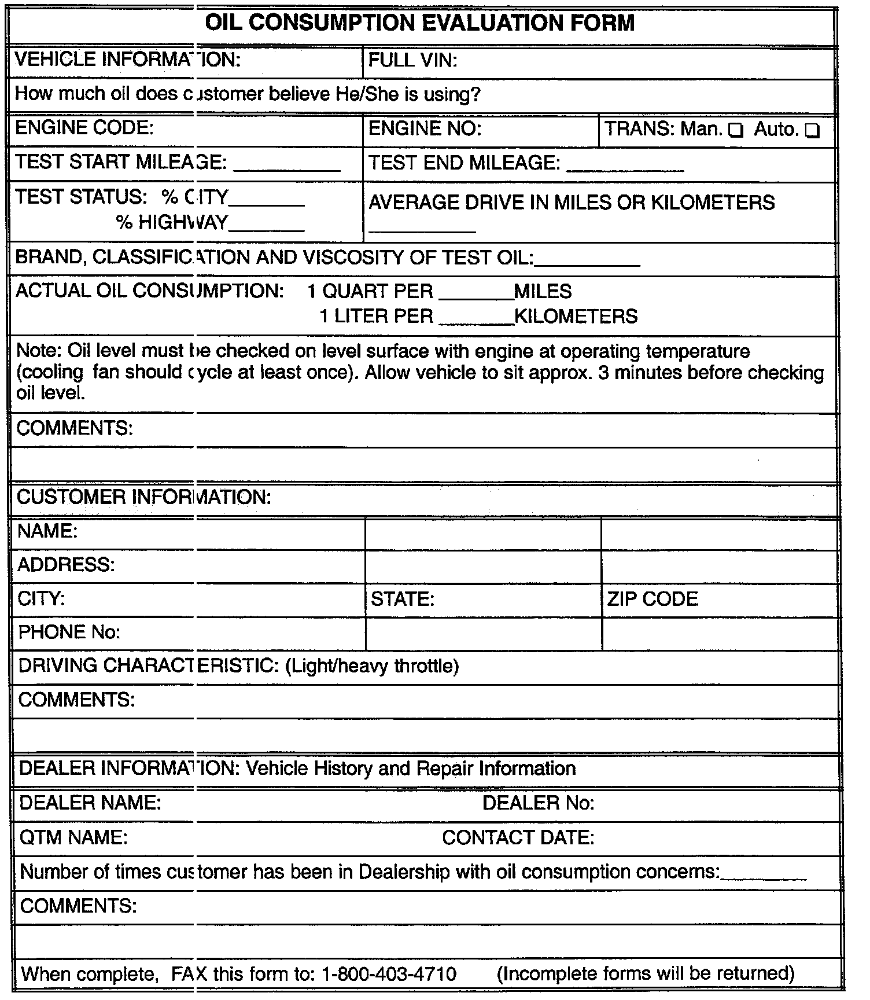
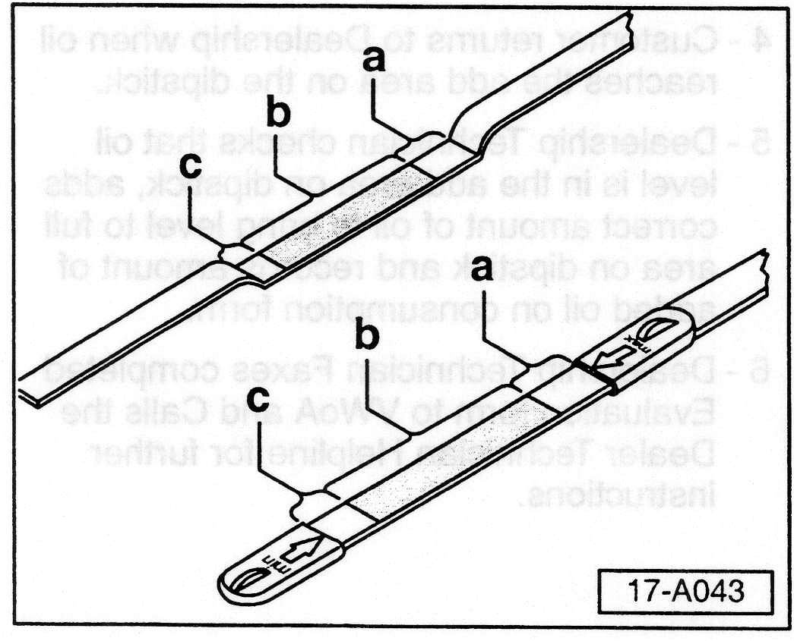
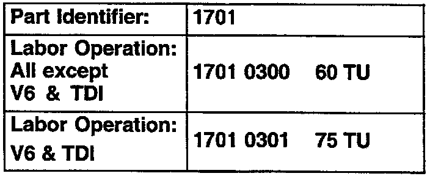

Engine - Oil Consumption Guidelines
Group: 17Number: 05-02
Date: June. 16, 2005
Subject:
Oil Consumption, Evaluating
Model(s):
ALL > 2006
Supersedes T.B. Group number 01-01 dated Mar. 5, 2001 due to Model Year close and VIN requirement added to Form.
Condition
Customer complains about oil consumption.
Service
Process Summary

1. Service Manager/Advisor fills out Oil Consumption form and notifies QTM.
2. Dealership Technician changes oil and filter ensuring proper oil brand, classification, viscosity and level when customer leaves Dealership.
3. Customer is instructed on how to properly check oil, and when to return to Dealership.
4. Customer returns to Dealership when oil reaches the add area on the dipstick.
5. Dealership Technician checks that oil level is in the add area on dipstick, adds correct amount of oil to bring level to full area on dipstick and records amount of added oil on consumption form.
6. Dealership Technician Faxes completed Evaluation form to VWoA and Calls the Dealer Technician Helpline for further instructions.
Process
Oil consumption evaluation, preliminary information (Service Manager/Advisor)
Using a copy of the evaluation form, ask the Customer:
^ When was oil last added?
^ What kind of oil was last added (brand, viscosity, etc.)?
^ How much oil do you believe you are using?
- Make a copy of the oil consumption evaluation form.
- Fill out appropriate information on evaluation form.
- Contact and inform your QTM regarding your intent on evaluating the vehicle for oil consumption.
Oil consumption evaluation, Initial Technician instruction.
- Check for any external oil leak(s) (repair any leak found).
- Inspect dipstick tube and ensure that it is properly inserted and fully seated.
- Drain engine oil completely and replace oil filter.

- Fill engine oil to proper level on dipstick area (-a-) (use only VWoA approved oil with proper viscosity for climatic conditions).
- Advise Customer to on how to properly check oil level every time he or she refuels the vehicle (As shown below).
Oil consumption evaluation, [Customer instructions]
Check oil level at each refueling as follows:
- Place vehicle on level surface.
- Let engine run until engine operating temperature is approx. 60°C (140°If), (usually when cooling fan cycles at least once).
- Switch ignition off, wait at least 3 minutes, pull out the dipstick and wipe it with a clean cloth.
- Reinsert the dipstick; push it all the way in.
- Pull dipstick out again and read level.

- Instruct Customer not to add oil but to return to your dealership when oil level reaches the add area (lower bend) or "min." arrow -c- on the dipstick as depicted in the Owner's Manual.
Oil consumption evaluation, [Technician instructions]
When Customer returns to your Dealership:
With engine at proper operating temperature.

- Check that oil level is at the add area (lower bend) -c- on the dipstick
If oil level is not down to this area -c-:
- Do not proceed, inform Customer to drive and accumulate miles until level reaches this point.
If oil level is at area -c-:
- Add the appropriate amount of oil to reach the indicated full area -a- on the dipstick.
- Record oil consumption on evaluation form.
^ At this point ALL information should be filled out on the Evaluation form.
- Technician should FAX a copy of the completed Evaluation form to the Volkswagen of America Dealer Technician Helpline at 1-800-403-4710.
- Place a copy of the completed Evaluation form in the vehicle information file.
Once Evaluation form has been Faxed:
- Contact the Dealer Technician Helpline for further instructions at 1-800-678-2389.

When procedure applies to vehicles with-in the applicable Limited Warranty (New Vehicle or Powertrain) use the table.